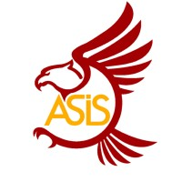
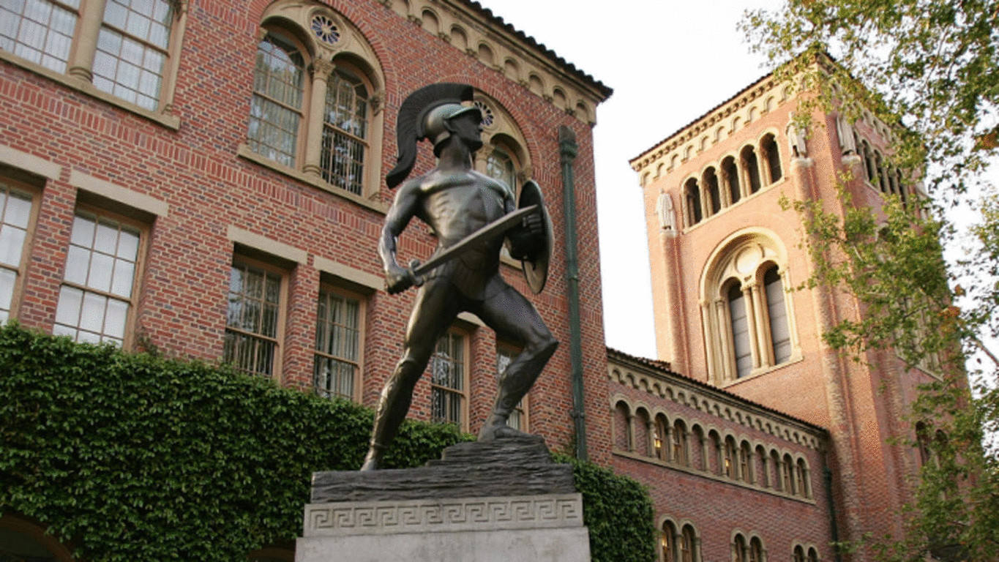

About Us Tentang Kami
Welcome to our official website!
Selamat datang di website resmi kami!
We are the only club that hosts community events for students who are Indonesian or affiliated with an Indonesian identity in the University of Southern California. We bring our members together through either cultural events, excursions or campaigns. We have a strong identity and we are always up to the challenge of being creative with the way we nurture community.
Kami adalah satu-satunya klub yang mengadakan acara komunitas untuk mahasiswa yang berkebangsaan Indonesia atau yang memiliki identitas Indonesia di University of Southern California. Kami menyatukan anggota melalui acara budaya, perjalanan, atau kampanye. Kami memiliki identitas yang kuat dan selalu siap menghadapi tantangan untuk kreatif dalam cara memelihara komunitas.
 2024-2025 Events Acara 2024-2025
Join us for our signature events throughout the academic year! We host welcoming events each semester to bring our Indonesian community together.
Bergabunglah dengan kami untuk acara unggulan sepanjang tahun akademik! Kami mengadakan acara penyambutan setiap semester untuk menyatukan komunitas Indonesia kami.
🍂 Fall Welcoming Penyambutan Musim Gugur

🌸 Spring Welcoming Penyambutan Musim Semi

🎊 Cultural Showcase Pameran Budaya

🏛️ USC Community Excursions Komunitas USC

Contact Us Hubungi Kami
Ready to join the USC Indonesian community? We'd love to hear from you :)
Siap bergabung dengan komunitas Indonesia USC? Kami ingin mendengar dari Anda :)
Email:
uscasis@usc.edu
Contact us for more information about upcoming events and membership!
Hubungi kami untuk informasi lebih lanjut tentang acara mendatang dan
keanggotaan!
Social Media:
Media Sosial:
@uscasis on Instagram
Follow us for the latest updates on events and activities!
Ikuti kami untuk pembaruan terbaru tentang acara dan kegiatan!
Location: Lokasi: USC Campus